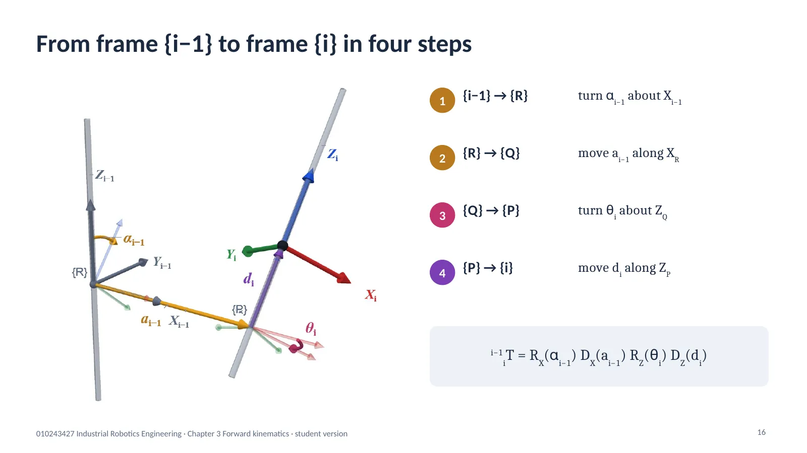
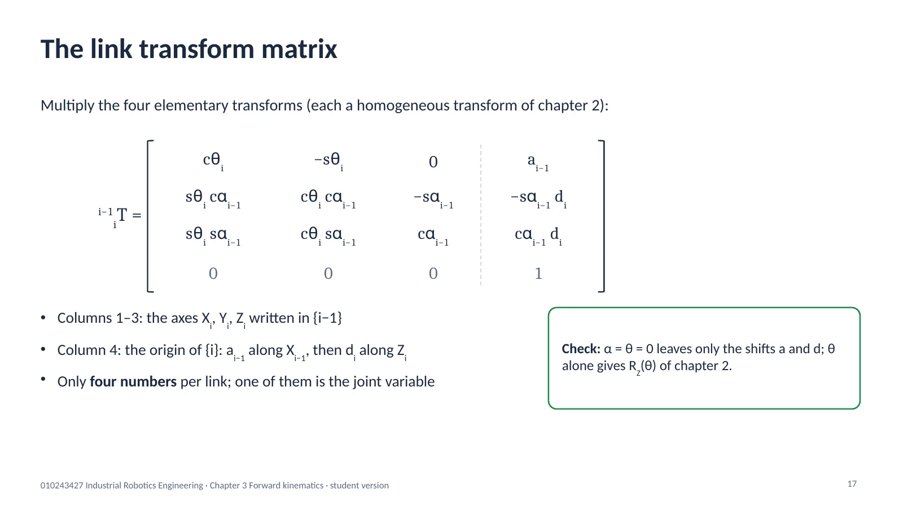
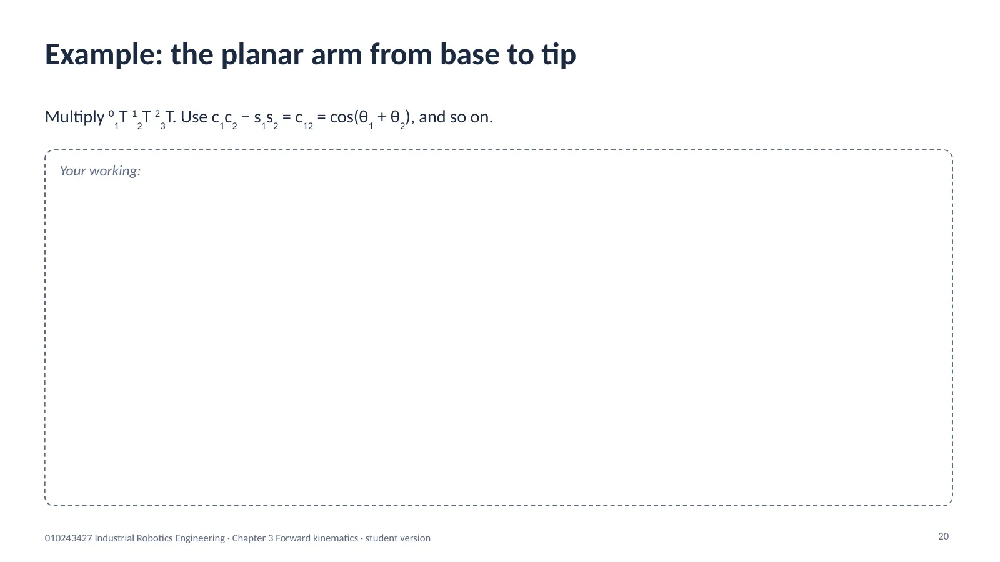
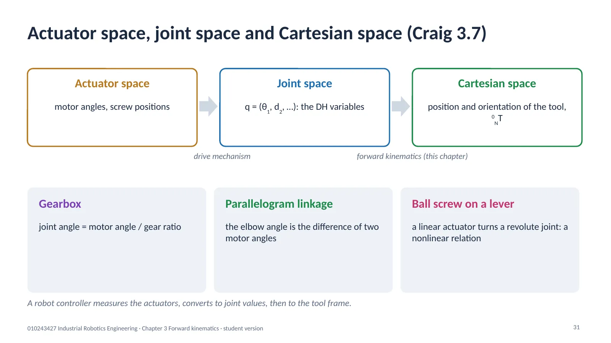

เมื่อมีตาราง DH แล้ว แต่ละแถวให้เมทริกซ์การแปลงจากเฟรม {i−1} ไป {i} หนึ่งตัว ซึ่งเป็นผลคูณของการหมุนและการเลื่อนสี่ขั้น (บทที่ 2) คูณเมทริกซ์ของทุกแถวต่อกันจากฐานถึงปลายได้ สมการจลนศาสตร์ของแขน หน้านี้ครอบคลุมสไลด์หน้า 16–20 และ 31 (Craig 3.5–3.7) มี เครื่องมือ 2 ชิ้น (A, B) และ 2 โจทย์
With a DH table, each row gives one transform from frame {i−1} to {i}, a product of four turns and shifts (chapter 2). Multiplying the rows from base to tip gives the kinematic equations of the arm. This page covers slides pp. 16–20 and 31 (Craig 3.5–3.7), with two tools (A, B) and 2 problems.
เฟรมสีเทาคือ {i−1} เฟรมจางคือเฟรมกลาง {R}, {Q}, {P} ใต้ภาพแสดงเมทริกซ์ของขั้นที่กำลังทำและผลคูณสะสมจนถึงขั้นนั้น เมื่อครบสี่ขั้น ผลคูณต้องเท่ากับสูตรของ Craig (สไลด์หน้า 17) ทุกช่อง ลองตั้ง α = 0 และ d = 0: ผลเหลือเพียงการหมุนรอบ Z กับการเลื่อนตาม X เหมือนแขนในระนาบ
The grey frame is {i−1}; the faint frames are the intermediate {R}, {Q}, {P}. Under the picture: the matrix of the current step and the running product. After all four steps the product must equal Craig's formula (slide p. 17) in every entry. Try α = 0 and d = 0: only a turn about Z and a shift along X remain, as in a planar arm.

แถวหนึ่งของตารางคือ \(\alpha_{i-1} = 90^\circ,\ a_{i-1} = 0,\ d_i = 0.3\text{ m},\ \theta_i = 0\) (ข้อต่อเลื่อน) จงหาคอลัมน์สุดท้าย (ตำแหน่งของจุดกำเนิด {i} ใน {i−1}) และช่อง r₂₃ ของ \({}^{i-1}_{\;\;\,i}T\)
A row of the table is \(\alpha_{i-1} = 90^\circ,\ a_{i-1} = 0,\ d_i = 0.3\text{ m},\ \theta_i = 0\) (a sliding joint). Find the last column (the origin of {i} in {i−1}) and the entry r₂₃ of \({}^{i-1}_{\;\;\,i}T\).


เนื้อหาเพิ่มจากตำรา (Craig 3.7): ตัวควบคุมหุ่นยนต์วัดมุมของมอเตอร์ ไม่ได้วัดมุมของข้อต่อโดยตรง ต้องแปลงผ่านกลไกส่งกำลังก่อน (เฟืองทด ก้านต่อสี่เหลี่ยมด้านขนาน สกรูขับ) จึงได้ตัวแปรข้อต่อ แล้วจลนศาสตร์ไปข้างหน้าของบทนี้จึงแปลงต่อเป็นตำแหน่งและทิศของเครื่องมือ ตัวอย่าง: แขนที่ขับข้อศอกด้วยก้านต่อสี่เหลี่ยมด้านขนาน มุมข้อศอกเทียบแขนบนคือผลต่างของมุมมอเตอร์สองตัว
Added from the textbook (Craig 3.7): a robot controller measures its motors, not its joint angles. A drive mechanism (a gearbox, a parallelogram linkage, a ball screw) converts motor values into joint variables, and the forward kinematics of this chapter then gives the tool frame. Example: on an arm whose elbow is driven through a parallelogram linkage, the elbow angle relative to the upper arm is the difference of two motor angles.
แต่ละแถวคือก้านหนึ่งก้าน ตัวแปรของข้อต่อหมุนบวกเข้ากับ θ ตัวแปรของข้อต่อเลื่อนบวกเข้ากับ d ภาพวาดก้านตามกติกาของ DH: เดิน ai−1 ตาม Xi−1 ไปถึงแกนข้อต่อ แล้วเดิน di ตามแกนนั้นไปถึงเฟรม {i} ลองสร้างแขนของการบ้านหรือแขนที่เห็นในโรงงานดู
Each row is one link. A revolute joint's variable is added to θ, a prismatic joint's to d. The picture draws each link by the DH rule: ai−1 along Xi−1 to the joint axis, then di along that axis to frame {i}. Try building the homework arms, or an arm you have seen in a factory.